I am a Masters student in computer science at the Interactive Robotics Lab, at Arizona State University, where I am fortunate to be advised by Heni Ben Amor. My work at ASU has been mostly focused around Reinforcement Learning, my thesis was at the cross-section of Model-Based and Distributional Reinforcement Learning.
Before joining ASU, I worked for Tesco, where I developed algorithms for capacitated vehicle routing problems operating in real-world for whole of UK and Ireland. I did my bachelors from PES University, Bangalore.
My goal is to learn more about Reinforcement Learning algortihms and make them more applicable to real-world problems.
Leveraging distributional reward formulations for model-based RL (thesis work) Spring 2021 code /
ppt /
thesis
Masters thesis work focused on making model-based reinforcement learning algorithms execute more
risk-averse actions and enable the learning to be more faster and stable. To achieve this, PDDM (a model-based RL algorithm) is provided with a distributional reward formulation as compared to the original scalar reward formulation. C-51 (distributional RL algorithm) is used to generate distributional reward formulations for every state-action pair.
Built a family of adaptive curvature methods for gradient-based stochastic optimization thorugh Experimentation with curvature matrix estimation and shrinkage methods for covariance matrices. These improve upon current 2nd order approximations based on Fisher or Gauss-Newton with adaptive stochastic gradient descent methods.
Using Max-Entropy Inverse Reinforcement Learning, trained an agent to learn various strategies for overtaking other cars via human demonstartions. This project was done as part of CSE-591('Advances in Robotics').
Trained a quadcopter to dribble a ball in air using platform attached to its back. Policy
gradient algorithms PPO, TRPO and VPG were used to train the agent and evaluate its performance for each of the methods. This project was done as an extra project for CSE-571('Artificial Intelligence')
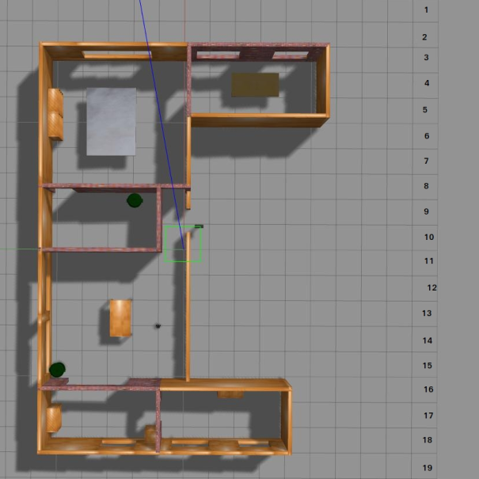
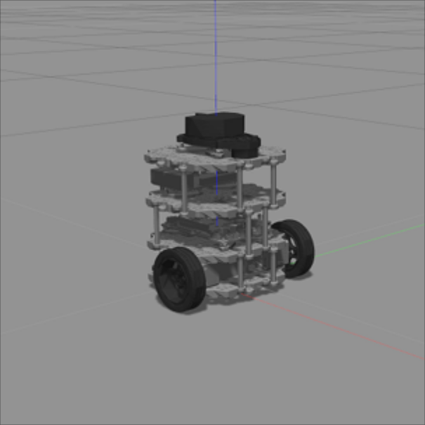
Turtle bot navigation in ROS using Q-learning
Spring 2019
Trained a turtle bot in Gazebo/ROS using Q-Learning to navigate across a maze of objects without colliding. This project was done as part of CSE-571('Artifical Intelligence') course work.
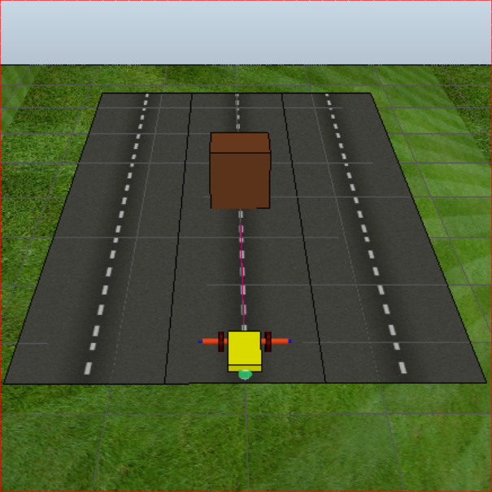
Copella Sim: Created Lane changing grid-world env Spring 2019 code
Created a grid-world environment in Copella Sim to simulate a three lane road system. The goal of the simulator was to enable the agent in learning lane changing policies using inputs from an ultrasonic sensor. At each reset of the environment state, the agent and other cars were randomly positioned on the three lanes.
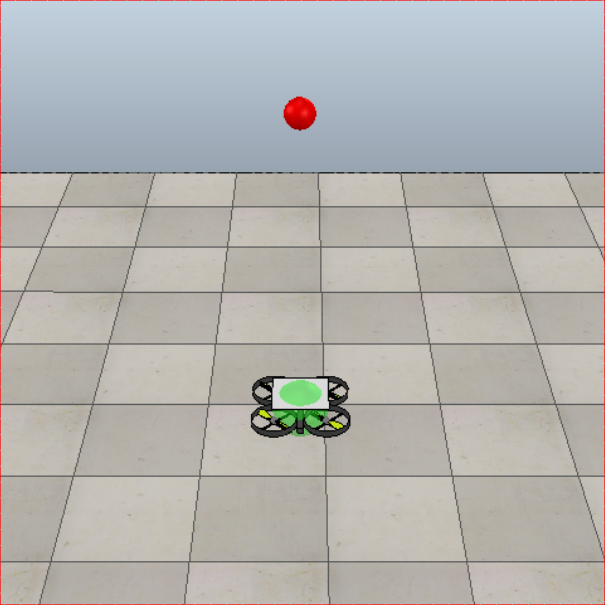
Copella Sim: Created air dribble quadcopter env Spring 2019 code
Using Copella Sim, created an environment simulating gravity and containing a quadcopter with platform attached at its back and a ball that initializes at a random distance on top of the quadcopter. The goal is to get the quadcopter to learn to balance iself with the platform attached and eventually dribble the ball on its platform. The reward was engineered to maximize the number of dribbles on quadcopter's platform without dropping the ball.
As part of CSE-515('Multimedia and Web Databases') created an Image based search engine using algorithms like Page rank, Personalized page rank, k-nearest neighbours, locality sensitive hashing for retrieving similar images from a dataset of 8900+ images belonging to 30 different categories.
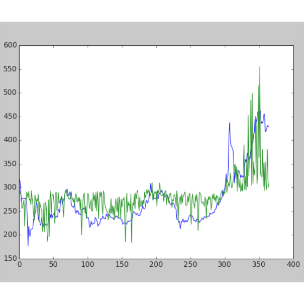
Bitcoin price prediction Spring 2016
For the final year bachelors degree project, created a model to predict bitcoin pricing. Initially, a dataset was created from scraping 50+ sources including bitcoin news outlets, social media twitter tags, pricing of various commodities(gold, oil), game betting outlets, etc over a period of two years in the past. Using the cleaned dataset along with bitcoin pricing over the period, the number of sources were reduced to 30 after applying Principal Component Analysis and bitcoin pricing was predicted for next 60 days.
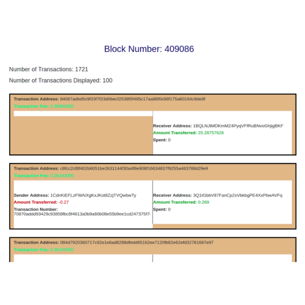
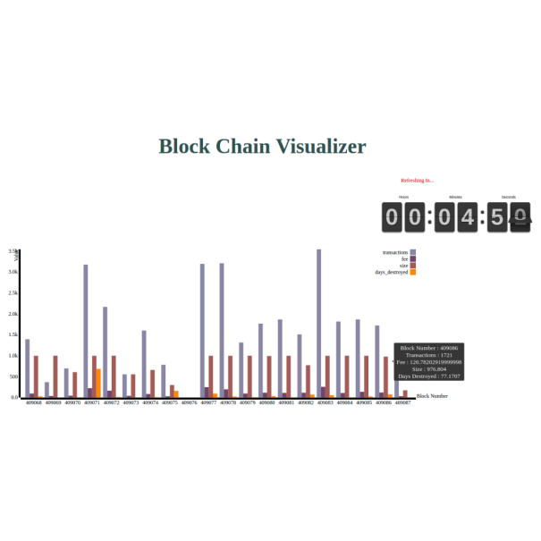
Bitcoin - Blockchain viewer Spring 2016
To understand blockchain and its usage in bitcoin, created a visualizer to show number of transactions in each block, total transaction amount for that block and the associated mining fees. Further, for each block singular transactions with sender and reciever wallet addresses were also visualized.
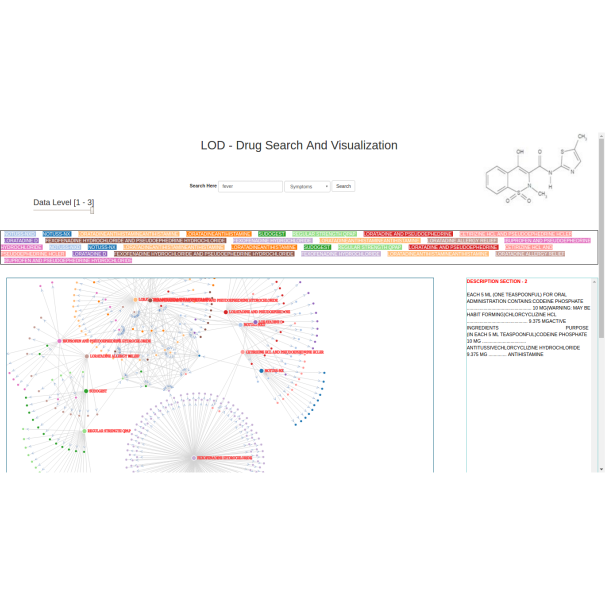
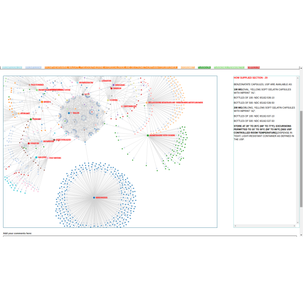
Drug data visualization in high dimensions Fall 2015 video
As part of my work at the KANOE Lab during bachelors, the ontological relationship between various drugs from the FDA published drug data was visualized and queried using D3.js.
Industry Experience
Intel Labs
May 2020 - Aug 2020
Developed model-based Reinforcement Learning algorithms that learn policies in complex environments faster, while also taking highly risk-averse actions, all by leveraging distributional rewards instead of mean rewards.
Conditional vehicular routing problem
July 2016 - June 2018
Developed Heuristic and meta-heuristic algorithms solving Vehicle Routing Problems in Supply Chain on end-customer delivery schedule optimization for the whole of UK.
Deployed real-time on 350+ stores operating 12500+ delivery vans everyday on multiple shifts.
Increased van utilization by 7-8\% across the entire estate.
Awarded resilient individual award for 2017-18 across Tesco Engineering India.
Awarded best team award for 2017-18 across Tesco Engineering India.
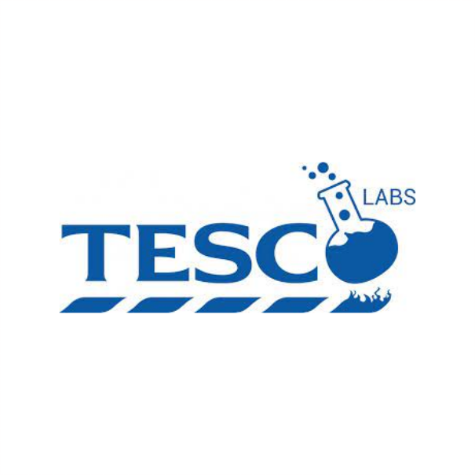
Tesco labs
Researched online customer behavior when using natural language bots as their personalized shopping assistants.
Built an IOS/Android hybrid app to test online group shopping behaviour at various age groups using chatbots.
Mobile App went live to a group of 30+ families across UK, receiving positive customer feedback
Tesco TechDay Android App
Part of tech team tasked with building a secure internal app for month-long communications, pre-events and promotions leading to annual Tesco Tech Day(2017).
Teaching / Talks / Mentoring
Teaching Assistant - CSE 571 'Artificail Intelligence'
Fall 2019
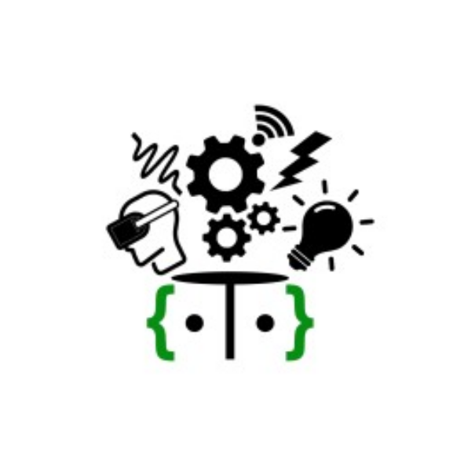
Android and Web development talks at Dayanand Sagar University and PES University
Fall 2015